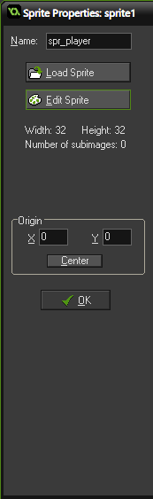
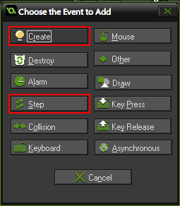

In this workshop, we will be learning how to build a platformer style game using Gamemaker Studio and GML. Since the release of Gamemaker Studio 2, Gamemaker is no longer free for download. To obtain a login so you can work on your projects at home, please see Andy at the next club meeting.
Let's start by making a project. Click the link below to learn how!
Sprites and Objects
 In your new project, you should see a lot of folders on the left side, as well as a panel of icons at the top. These are to organize your
In your new project, you should see a lot of folders on the left side, as well as a panel of icons at the top. These are to organize your
assets, such as images, music, objects, and most importantly, code.

Sprites are your image files. They can hold animations, and they are used by objects. Right click the Sprite
folder to create a new sprite. You should be greeted by the sprite editor window.

Name your sprite spr_player, and click edit sprite. This opens a second window, which can be used to view your animations or make quick adjustments.
Tip: Always use prefixes. The prefix spr_ is used to distinguish sprites from other assets, which will be important later. Another common
alternative is s_ or simply s, but these can confuse sounds and sprites.
In the second window (which we will call the animation panel), click the paper icon in the top left corner to create an image. Size 32 x 32
will work for our purposes.
To edit the image, click the pencil icon in the top right. '
This opens a paint-like interface to draw and create images. For now, we can
fill our image with a solid colour, such as cyan.

 Hit the green check mark in the top left of each window to save your changes.
Hit the green check mark in the top left of each window to save your changes.
Once you've finished creating spr_player, try making a sprite for your wall as well. It will be the same size, and for now, fill it with a solid
colour that is different than your player. Name it spr_wall.
Cool! Your images are created, now let's start writing some code for them.
Find the objects folder, and make two new objects,
called obj_player and obj_wall. On the bar on the left, under Sprite, click the icon and select the corresponding sprite
Now, click the green OK checkmark on obj_wall, but keep the obj_player window open. We will be writing most of
the code in here.
The Create Event

In the player object, click the Add Event button at the bottom. You should see this window appear. We will be making two events,
Create and Step, so repeat this twice.
Once those events are created, let's start writing some code, shall we? On the right side, there are several panels. Go to the control panel, and
drag and drop the paper icon for Execute a piece of code onto the Actions section.
In the newly opened code block, we need to make some variables, which are our speed, gravity, horizontal and vertical speed, and jump speed variables. These are
values that our code uses to set the speed of our player when we are moving. We set them as variables here so we can change the value in one place to uniformly change
it throughout the player object, rather than having to change each individual number later on.
Tip: End all your lines of code with a semicolon (;). While Gamemaker doesn't require it, most other programming languages do, so
it's a good habit to get into.
// hi! I'm a comment! Comments are pieces of text that don't actually convert to code
// In this create event, we create our variables, which store values that we will use later on!
// You can use "//" to write a comment. Comments are not necessary to write in your game,
// so you don't need to copy this down
hsp = 0;
vsp = 0;
movespeed = 5;
jumpspeed = 7;
grav = 0.2;
(Note: Use hsp and vsp, as hspeed and vspeed are variables already built in, which do
not work with our code)
That's the create event done with! This code will run once when the object is created, but only once. The step event is
the meat of this sandwich, so let's chow down!
The Step Event
Following the same steps as we did for the create event, drag in a code block for our step event, and open it. First, let's establish some input
for our player.
Keyboard Input
For our input, we will be using the WASD control scheme (although arrow keys, or any other control scheme, can also be used. See Andy for more information)
Write the following code.
// We are using the built in "keyboard_check" functions in GameMaker, which give us either 1 or 0.
// If it is 1, that means the key is being pressed.
// We make our own variables so we can use them later.
// That way, we can type "key_left" every time we need to check the left key, instead of typing
// keyboard_checK(blah blah blah, you get the idea).
key_left = keyboard_check(ord("A"));
key_right = keyboard_check(ord("D"));
key_jump = keyboard_check_pressed(ord("W"));
This stores our keyboard inputs into 3 variables which we can easily use in our code. They use the built in GameMaker keyboard_check functions,
but we simplify them to variables so it is easier to access later. Notice that key_jump uses
keyboard_check_pressed rather than keyboard_check. This is because when we hit the jump key, we
want to jump once, not float infinitely into the sky. That's the input completed!
Collisions
Time to get movement and collisions written! This code gets a bit more complicated, so take your time and ask questions if you don't understand (both in person at meetings, or
in our Discord server! There's a handy Get Help button in the bottom right corner)
// we get our direction by using both the key_right and key_left variables.
// remember how they store either 0 or 1?
// This means that (key_right - key left) will:
// give +1 when key_right is pressed and key_left isn't (1 - 0 = 1) and we will move right
// give -1 when key_left is pressed and key_right isn't (0 - 1 = -1) and we will move left
// give 0 when both or neither key is pressed (0 - 0 and 1 - 1 are both 0) and we will not move
hsp = movespeed * (key_right - key_left);
// Our collision code checks if the player is about to hit a wall.
// If we are, run the code below
if(place_meeting(x + hsp, y, obj_wall)) {
// while we are still not going to hit the wall, move as close as we can to it
while(!place_meeting(x + sign(hsp), y, obj_wall)) {
x += sign(hsp);
}
// STOP! We've touched the wall, let's not move any further
hsp = 0;
}
// Oh hey, we aren't touching a wall, let's move forwards
x += hsp;
// Jumping time! If we're touching the ground, we want to jump
if(place_meeting(x,y + 1, obj_wall)) {
// Our vertical speed is equal to our jump speed * key_jump
// (either 1 or 0, so vsp will be either -jumpspeed or 0)
// Jump speed is negative because in computer code, up is negative, down is positive
vsp = -jumpspeed * key_jump;
}
if(vsp <= 12) {
vsp += grav;
}
// The same logic applies for vertical collisions
if(place_meeting(x,y + vsp, obj_wall)) {
while(!place_meeting(x, y + sign(vsp), obj_wall)) {
y += sign(vsp);
}
vsp = 0;
}
y += vsp;
And that's it! That's your player object done, and you can move now! Except... there's no level to move in yet. Let's design a level!
Setting Up Your Level
In Gamemaker, levels in your game are called rooms. Make a room by right clicking on the room folder and selecting create room.
You should be greeted by a window that looks like this.

The first step you want to take is to change the speed. Default room speed is at 30, but we're going to change it to 60, which
means our game is running at 60 frames per second. The game speed is located here. 60 frames per second is preferable as it is generally smoother. Depending on your code,
you can change this value to fit, but 60 works for our purposes.
Now we can start adding objects into our room. Go to the object tab at the top.
 Select the player by clicking on the blank box and selecting
Select the player by clicking on the blank box and selecting obj_player. Click anywhere in the room to place a single player object down. Repeat this but with the
wall object. To add objects down quickly, press shift and ctrl at the same time, click, and drag. Other shortcuts are shown on the right.
Design your level, and once you're ready, we can test it!
Now that the level is designed, click the green checkmark to save your work, and hit the green play arrow on the top bar to run your game.
Congratulations! You've made it to the end of the tutorial, and you should have a working platformer now! This is a great starting point for many games,
and from here the next step is usually combat, puzzles, switching levels, or view cameras. It's all open to your creativity now. See Andy if you want to continue
working on your project, and he can help you. Enjoy!
Bonus tip: Subscribe to Osmechelon on YouTube!
Extra Resources
Here are some other YouTube channels and Websites to help you on your game development journey!
Shaun Spalding (Youtube)
Heartbeast (Youtube)
PixelatedPope (Youtube)
RealTutsGML (Youtube)
r/Gamemaker (Reddit)
Official Gamemaker Help Page (YoyoGames)
Official Gamemaker Manual (YoyoGames)
And of course, Google is your best friend! There's plenty of help you can get by just searching your question up online.
So go forth, explorers, pioneers, and innovators.
Engineer your own games and express your creativity. The adventure has only begun!